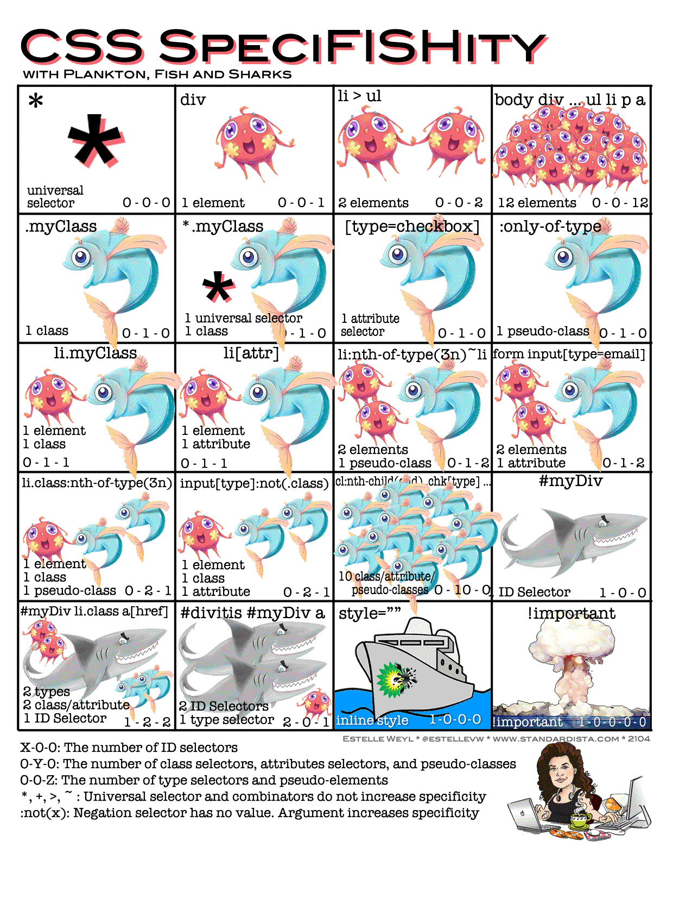

css-层叠、继承和css单位
选择器的特异度(Specificity)
| 选择器 | 内联？ | id个数 | (伪)类个数 | 标签个数 | 特异度 |
|---|---|---|---|---|---|
| #nav.listlia:link | 0 | 1 | 2 | 2 | 0122 |
| .hd ul.links a | 0 | 0 | 2 | 2 | 0022 |
122>22所以第一个的特异度大,优先级高
简单选择器的特异度级别
- Level 0: *
- Level 1: 标签选择器、伪元素(:before、:after)
- Level 2:类、伪类(:link、:first-child)、属性
- Level 3:id
- Level 4:内联
!important优先级最高,慎用

css 样式的来源
- 页面开发者
- 用户设置
- 浏览器预设
用户样式
浏览器可以指定一个本地css文件,打开所有页面时自动加载
浏览器预设样式
那条声明起作用
- 找出匹配到的该属性所有声明
- 根据规则来源,优先级从低到高：
- 浏览器预览
- 用户设置
- 网页样式
- 同一来源中，按照特异度排序，越特殊优先级越高
- 特异度一样时，按照样式书写顺序，后面的优先级高
有!important 时的变化
- 找出匹配到的该属性所有声明
- 根据规则来源,优先级从低到高：
- 浏览器预览
- 用户设置
- 网页样式
- 含
!important的网页样式 - 含
!important的用户网页设置
- 同一来源中，按照特异度排序，越特殊优先级越高
- 特异度一样时，按照样式书写顺序，后面的优先级高
默认值策略 Defaulting
继承
某些属性会
自动继承其父元素的计算值,除非显式指定一个值
1 | <p>this is a <em>test</em> of <strong>inherit</strong></p> |
显式继承
文字相关的css会
自动继承，其他的一些不可以继承可以手动继承
1 | *{ |
初始值
- css中,每个属性都有一个初始值
- background-color的初始值为transparent
- margin-left的初始值为0
- 可以显式重置为初始值，比如background-color:initial;
css求值的过程
- 由 DOM树 & 样式规则
- filtering:对应用到该页面的规则用以下条件进行筛选：选择器匹配、属性有效、符合当前media等
- 声明值:Declared Values，一个元素的某属性可能由0到多个声明值。如：p{font-size:16px}和p.text{font-size:1.2em}
- cascading:按照来源、!important、选择器特异性、书写顺序等选出优先级最高的
一个属性值 - 层叠值:Cascaded Value，在层叠过程中，赢得优先级比赛的那个值。如 1.2em
- defaulting:当层叠值为空时，使用继承或初始值
- 指定值:Specified Value，经过cascading和defaulting之后，保证指定值一定不为空
- resolving:将一些相对值或者关键字转化成绝对值。如em转为px，相对路径转为绝对路径
- 计算值:Computed Value，一般来说是，浏览器会在不进行实际布局的情况下，所能得到的最具体的值。如60%。继承是继承的计算值）
- formatting:将计算值进一步转换。如关键字、百分比等都转为绝对值
- 使用值:Used Value，进行实际布局时使用的值，不会再有相对值或关键字。如400.2px
- constraining:将小数像素值转为整数
- 实际值:渲染时实际生效的值。如400px
strong 元素font-size的求值过程
1 | <article> |
各种类型的值
- 关键值：font-size:inatial, box-sizing:inherit, color:red
- 字符串：content:”abc”
- URL：background-image:url(/resources/img/xiong.png)
- 长度：font-size:2em, height:100px, width:100px
- 百分比：width:50%, font-size:150%
- 整数：z-index:9
- 浮点数：line-height:1.8
- 颜色：color:#fff, color:rgb(0,0,100)
- 时间：transition-duration:0.3s
- 角度：transform:rorateX(deg)
- 函数：content:attr(title), height:calc(100vh-100px)
长度单位
- 绝对单位
- px：像素，对应显示器的一个像素点
- in：英寸
- cm：厘米
- mm：毫米
- pt：磅（1pt=1/72英寸）
- pc：1pc=12pt
- 相对单位
- em：相对于该元素的一个font-size大小的值。（常用）
- rem：相对于根元素root即html的font-size。（手机上用）
- vh：浏览器窗口高度的1%。（做全屏的布局时用）
- vw：浏览器窗口宽度的1%（做全屏的布局时用）
- vmin：vh和vw中的较小者 （手机横屏竖屏）
- vmax：vh和vw中的较大者
颜色
- 关键字：147种颜色的关键字。如red
- Hex：十六进制的指定方法，如#十六进制的数
- RGB & RGBA
- RGB：rgb(255,0,0)，从0到255的数值范围内。
- RGBA比RGB增加了透明度。一个元素可以是半透明的，但是其中的元素不是半透明的。rgba(0,0,0,0.1),其中最后一位表示透明度，取值范围是0-1。
- HSL
- Hue:色相是色彩的基本属性，就是平常所说的颜色的名称，如红色、黄色等。取值范围是0-360,按角度取值。一般固定
- Saturation:饱和度是指色彩的纯度，值越高色彩越纯，越低则逐渐变灰。取值范围是0-100%
- Lightness:亮度，越高颜色越亮。取值范围是0-100%,三个数字来表示颜色。
- 例如：hsl(0,50%,50%,50%)、hsla(120,50%,30%,0.5)